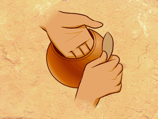

Now the potter scrapes the pot to make it thinner and smooth out the places where the coils are joined together. She uses a broken piece from an old pot, called a POTSHERD, or maybe even the lens from a pair of eyeglasses.

|  |
Now the potter scrapes the pot to make it thinner and smooth out the places where the coils are joined together. She uses a broken piece from an old pot, called a POTSHERD, or maybe even the lens from a pair of eyeglasses. |
|